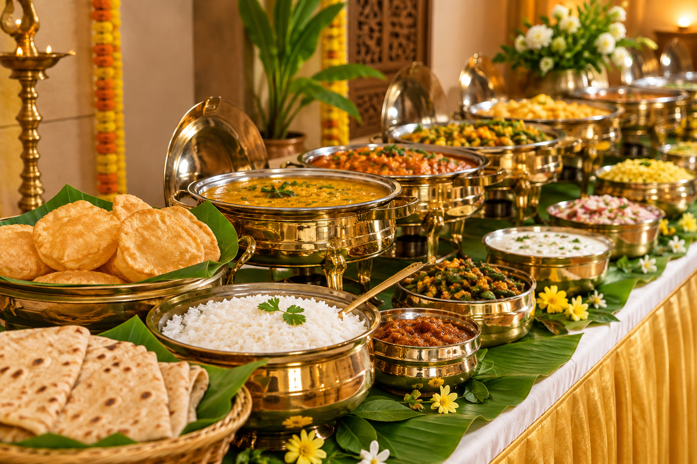
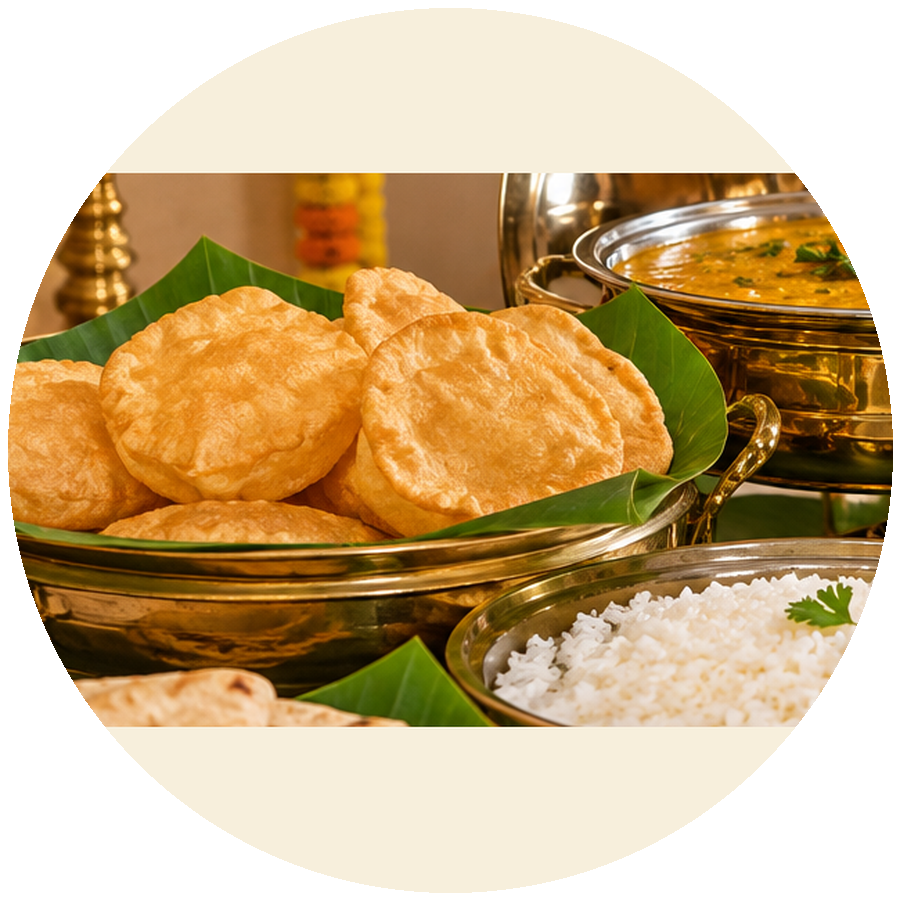

✦
SRI VRINDA'S CATERING SERVICE
A Taste of
Authentic
Tradition
Tamilnadu Style
Authentic
Tradition
Tamilnadu Style
Freshly prepared with love,
served with timeless tradition.
served with timeless tradition.
Book Now
●8197317345
●www.srivrindas.in
